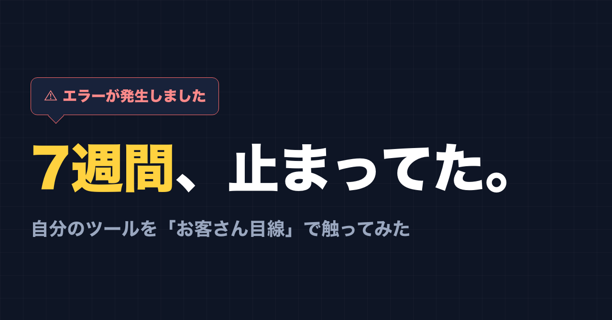
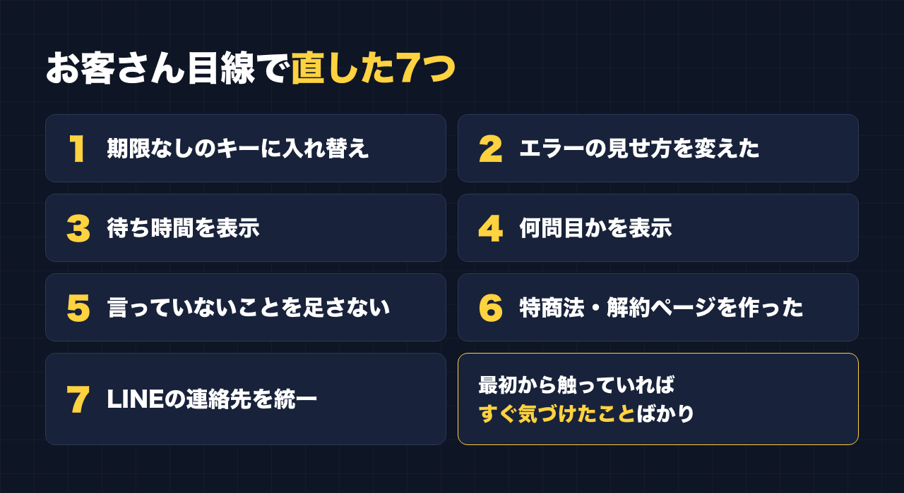

1. タイトルをコピーして、note のタイトル欄に貼る
2. 「本文1をコピー」から順にコピーし、note の本文に貼る
3. 青いラベルの位置に、images フォルダの同じ名前の画像を入れる（本文には貼られません）
※ 見出しが普通の文字になった場合は、その行を選んで「大見出し」を設定してください

最初のボタンを押したら、エラーが出ました。
2026年9月28日のことです。私が作った「副業ドラフト」というツールを、はじめて来たお客さんのつもりで、頭から順番に触ってもらいました。触ったのは私ではなく、Claude です。「初めてこのページに来た人として、上から順に使ってみて。引っかかったところを全部教えて」と頼みました。
結果は、1つ目のボタンで止まりました。
原因を調べてもらうと、ツールの裏で使っている Anthropic の API キーに、有効期限が付いていました。期限は8月9日。つまり8月9日から9月28日まで、約7週間、このツールは最初のボタンでエラーになる状態でした。
その間に来た人がいたとしたら、全員、何もできずに帰ったことになります。
利用者ゼロ・売上ゼロのツール
先に正直に書いておきます。副業ドラフトは、今のところ利用者ゼロ、売上もゼロです。
AI の質問に答えるだけで、副業に使える自分の強みを棚卸しして、Threads や note の下書きを作る。そういうツールです。作ったこと自体には満足していて、そこで止まっていました。
利用者がゼロなのは、発信が足りないからだと思っていました。それも理由の1つだとは思います。ただ、少なくともこの7週間については、もっと手前の問題がありました。来てくれた人がいても、使えなかったのです。
利用者ゼロの理由が全部これだった、とは言えません。でも「売れない理由を考える前に、そもそも動いているかを確かめる」という順番を、完全に飛ばしていたのは事実です。
なぜ7週間も気づかなかったのか
理由は単純で、自分では触っていなかったからです。
作った本人は、ツールの中身を知っています。どこを押せば何が起きるか分かっているので、わざわざ最初から触り直すことがありません。触るとしても、直したい部分だけを開いて確認する。最初の画面から、お客さんと同じ順番で進むことはしていませんでした。
もう1つは、エラーが出ても私に知らせる仕組みがなかったことです。エラーはサーバーの記録には残っていても、それを見に行かなければ分かりません。お客さんが困っていても、こちらには何も届かない状態でした。
直したこと
キーを入れ替えて終わりにせず、「はじめて来た人が困るところ」をまとめて直してもらいました。

1. 期限なしのキーに入れ替えた
まず、有効期限のない API キーを新しく作って入れ替えました。これでツールは元どおり動くようになりました。
これから同じように API キーを使う人には、期限の有無だけでなく、使いすぎを防ぐ上限（利用額の上限）も確認しておくことをおすすめします。期限をなくすと、今度は「止まらない」ことが心配になるからです。
2. エラーの見せ方を変えた
以前は、裏側のエラー内容がそのまま画面に出ていました。お客さんから見れば、意味の分からない英語や専門用語です。
これを「ただいま一時的に利用できない状態です。少し時間をおいて、もう一度お試しください。続く場合は公式LINEでお知らせください」という案内に変えました。細かい原因はサーバーの記録にだけ残します。
3. 待ち時間を表示した
下書きを作るのには少し時間がかかります。何も書いていないと、固まったのか動いているのか分かりません。そこで生成中の画面に「1分ほどかかります。画面を閉じずにお待ちください」と出すようにしました。
4. ヒヤリングが何問目かを表示した
最初の質問パートは、終わりが見えないと不安になります。「いま◯問目です（だいたい7〜10問で、自動で次に進みます）」と表示するようにしました。
5. 下書きに「言っていないこと」を足さないようにした
試しに出てきた下書きを見ると、本人が話していない出来事や、まだ存在しない資料への誘導が混ざることがありました。これを禁止するルールを足しました。
6. 特定商取引法の表記と、自分で解約できるページを作った
有料プランがあるのに、販売者の情報や返金の考え方をまとめたページがありませんでした。特定商取引法に基づく表記のページを作り、あわせて、お客さんが自分で解約の手続きができるページへのリンクも置きました。
7. 連絡先のLINEをそろえた
購入まわりの「LINEで連絡」ボタンが、今の公式LINEとは別のLINEアカウントにつながっていました。今の公式LINEに統一しました。
どれも、お客さんとして一度でも最初から触っていれば、すぐ気づけたことばかりです。
学んだのは「自分の店に、客として入る」こと
今回のことを一言にすると、これです。
自分の商品を、定期的にお客さんとして使う。
作る側の目線だと、「ちゃんと作ったはず」が前提になります。お客さんの目線だと、「最初のボタンが押せるか」から始まります。見ている場所がまったく違います。
私がやったのは、特別なことではありません。AI に「はじめて来た人として、上から順に使ってみて」と頼んだだけです。自分でやると、どうしても知っている道を通ってしまいます。何も知らない人のつもりで触ってもらうと、自分が素通りしていた場所で、ちゃんと引っかかってくれます。
同じように何かを作って公開している人に、3つだけ書いておきます。
- 月に1回でいいので、最初の画面から、お客さんと同じ順番で触る
- 外部のサービスのキーや契約に、期限がないか確認する
- エラーが出たとき、お客さんに何が見えるかを確認する
売れない理由を探すのは、そのあとで十分でした。
作って満足していた人へ
作ったものが動かなくなっていても、使う人がいなければ誰も教えてくれません。静かに止まって、静かに誰も来なくなるだけです。
利用者ゼロ・売上ゼロという数字は、今も変わっていません。ただ、少なくとも今は、来てくれた人が最初のボタンで帰ることはなくなりました。そこからやり直しです。
最後に
ここからは宣伝です。
公式LINEでは、「特典」と送っていただくと、LINE限定のプロンプト5本をお届けしています。
https://lin.ee/RzyA13P
今回直した「副業ドラフト」は、AI の質問に答えるだけで、副業に使える強みの棚卸しと、Threads の下書きを作るツールです。Threads の下書き3本までは無料で使えます。今はちゃんと動きます。もし引っかかるところがあれば、公式LINEで教えてください。
https://note-threadssf.onrender.com
Threads では、こうした試行錯誤を日々発信しています。
https://www.threads.com/@shachiku_mao
最後まで読んでいただき、ありがとうございました。